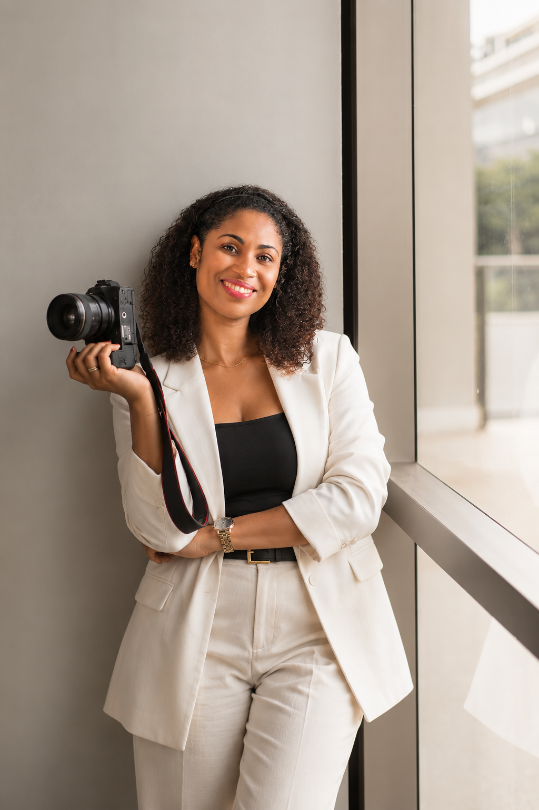
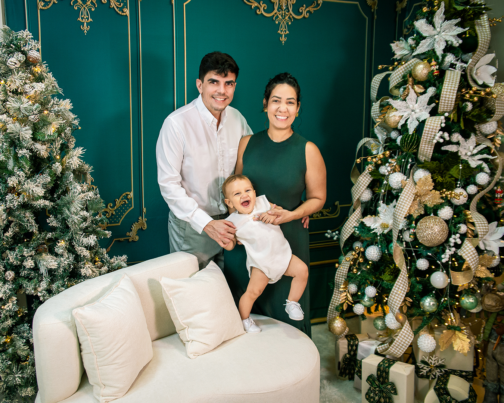
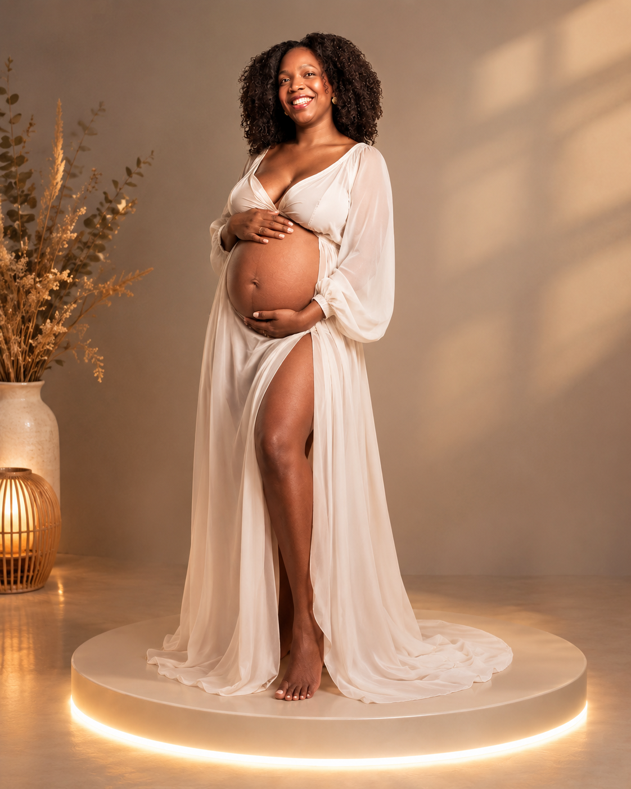
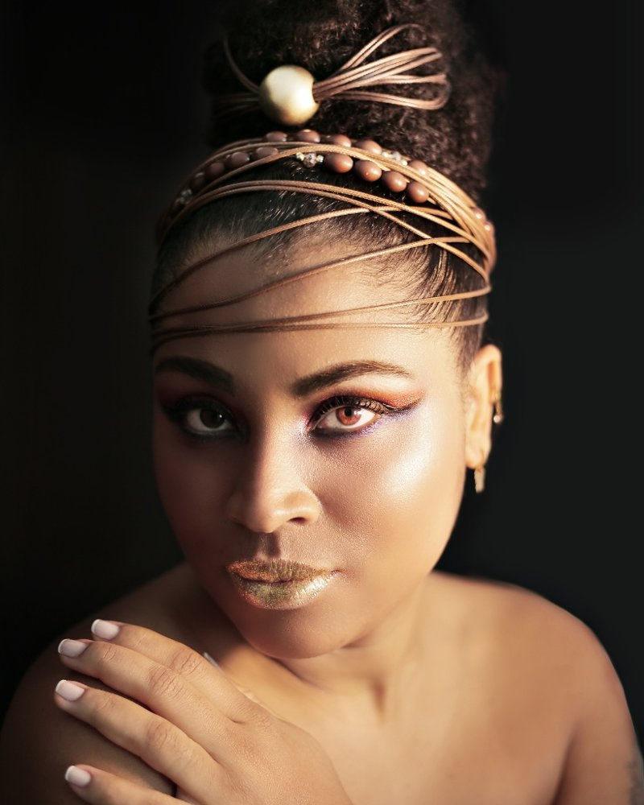
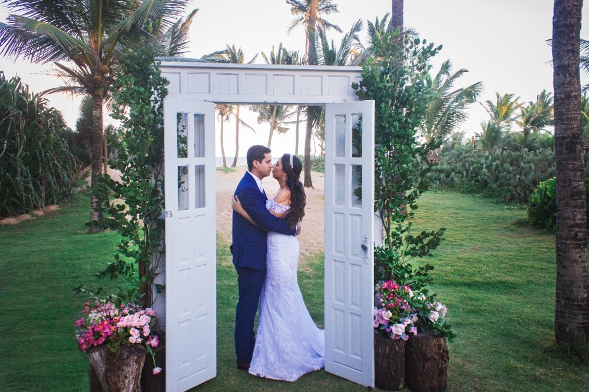
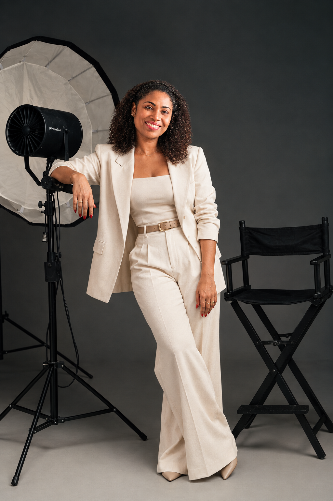

Olhares atentos, memórias eternas: transformando instantes comuns em arte para toda a vida.
Especializada em ensaios de família, gestante, estúdio e cobertura de eventos sociais. Um olhar sensível e humanizado dedicado a congelar a sua essência.

A essência por trás das lentes
A fotografia entrou na minha vida não apenas como uma profissão, mas como uma missão de preservar o que há de mais precioso: as memórias, os afetos e a identidade de cada pessoa.
Acredito que cada clique carrega uma verdade única. Com um olhar sensível e humanizado, unindo técnica e muita dedicação para que cada sessão seja uma experiência leve e inesquecível.
Mais do que entregar imagens bonitas, busco construir conexões genuínas com cada cliente, transformando instantes efêmeros em um patrimônio visual repleto de significado.
Serviços em Destaque

Ensaios de Família

Gestantes

Estúdio

Eventos Sociais
Como Atendo os Meus Clientes
Acredito que uma boa fotografia nasce muito antes do clique: começa na confiança e no acolhimento. O atendimento é pautado em três pilares fundamentais:
Escuta Ativa e Personalização
Antes de qualquer ensaio ou evento, queremos te conhecer. Entendemos quais são os seus desejos, a sua história e o que você espera eternizar, desenhando uma experiência sob medida para você ou sua família.
Acolhimento e Leveza
Sabemos que nem todo mundo se sente confortável diante das câmeras. Por isso, criamos um ambiente seguro, descontraído e sem pressa, onde você pode ser quem é, garantindo expressões naturais e espontâneas.
Compromisso e Transparência
Cuidamos de cada detalhe com muito carinho — desde a preparação inicial até a entrega final das imagens tratadas com rigor técnico —, mantendo uma comunicação clara, pontual e honesta em todas as etapas.
Pronta para registrar a sua história com sensibilidade?
Entre em contacto e reserve o seu momento. Será um prazer transformar a sua trajetória em arte.
